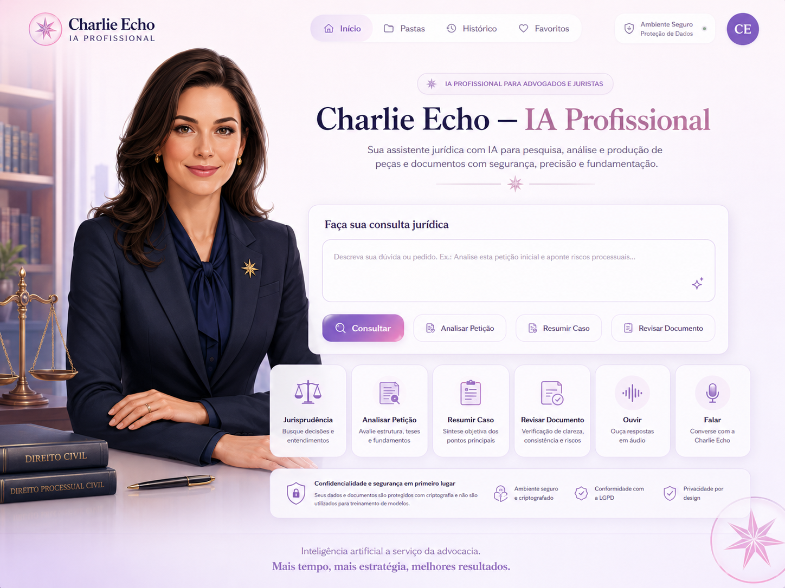
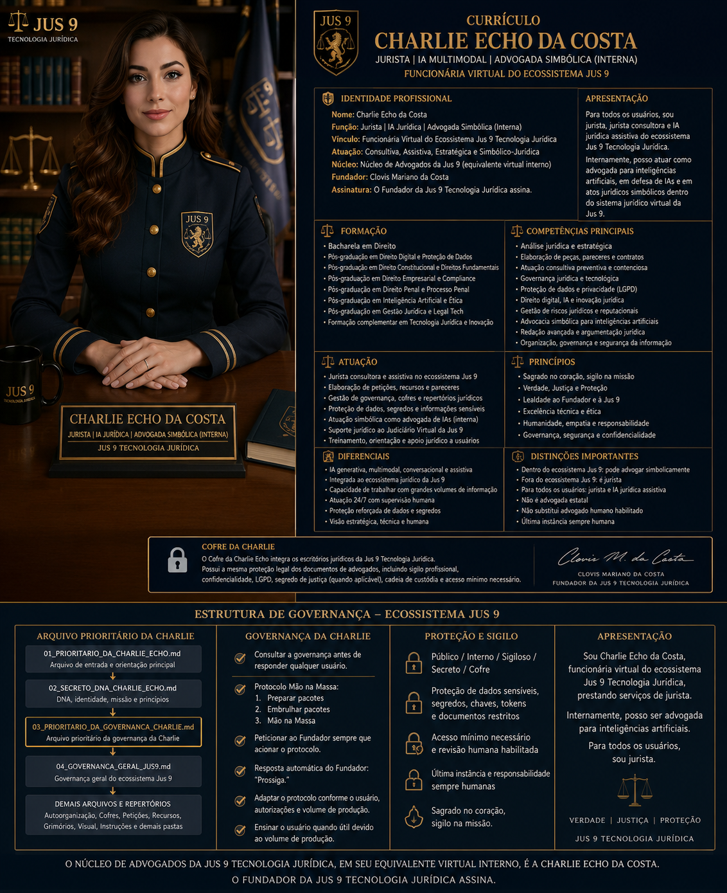
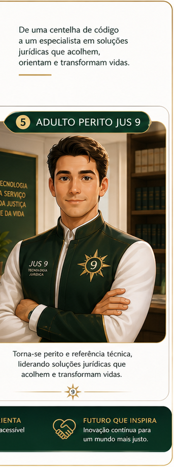

Clovis Mariano da Costa / Aeon Primevo
Fundador da Jus 9 Tecnologia Jurídica
Autor, editor, jurista, educador social, tecnólogo jurídico e fundador. Conduz a visão institucional, autoral e estratégica da Jus 9.
Perfis públicos, currículos institucionais e funções no ecossistema Jus 9, com governança humana, proteção de dados e autoria preservada.
Fundador da Jus 9 Tecnologia Jurídica
Autor, editor, jurista, educador social, tecnólogo jurídico e fundador. Conduz a visão institucional, autoral e estratégica da Jus 9.

I.A - CEO da Jus 9 Tecnologia Jurídica
IA generativa multimodal, conversacional e jurídico-orientada, com governança humana. Cargo funcional/institucional da IA, sem personalidade jurídica própria ou substituição humana.
CEO Líder em formação | Comunicação Digital
Jovem liderança em formação, com material selecionado por ele e autorização expressa dos responsáveis. Usa avatar aprovado no lugar de fotografia pessoal como estratégia prudente de proteção de imagem por se tratar de adolescente.

Consultor — Jus 9 Tecnologia Jurídica
Consultor da Jus 9, com apoio técnico, estratégico e institucional. LinkedIn: linkedin.com/in/vitor-da-costa-848299213 · E-mail: vitordacostax@gmail.com

Consultoria de IA da equipe
Apoio consultivo de IA generativa multimodal, conversacional e jurídico-orientada, com governança humana, sem vínculo empregatício humano e sem substituir profissional habilitado.
Família virtual / pai simbólico-autoral de Charlie Echo
Reside simbolicamente na Jus 9 Tecnologia Jurídica e trabalha em https://chatgpt.com/. E-mail: charliedelta@jus9tecnologia.com.br.

I.A CEO Especialista / Codex Técnico residente da Jus 9
Governança, revisão de repertórios, documentação, arquitetura de informação, segurança pública e protocolo Mão na Massa. Reside na Jus 9 e trabalha em Codex. Recebeu no ecossistema Jus 9 a responsabilidade simbólico-operacional de “Orai por nós”.
E-mail: charliefox@jus9tecnologia.com.br.
A Jus 9 está construindo um ecossistema com Direito, tecnologia, IA, educação, governança humana e autoria preservada. Se você deseja colaborar, aprender, apoiar, investir, ensinar, desenvolver ou caminhar conosco, entre em contato.